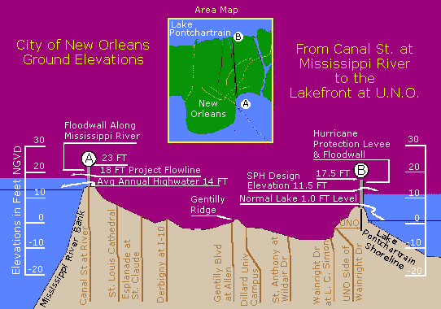

Wednesday, August 31, 2005
WITH GOVERNMENT HEROICALLY RIDING IN TO RESCUE people from the consequences of government mismanagement of a natural event, this seems an apropos time to note an outstanding observation by one of Gandhi's chief disciples:
There is no need for me to protest against the government’s faults, it is against its good deeds that my protests are needed. I have to tell the people what sheep they are. Is it a matter of rejoicing if you all turn into sheep and tell me how well the shepherds look after you? What am I to say? It seems to me that it would be better if the shepherds neglected their duty. The sheep would then, at least, realize that they are sheep. They might then come to their senses and remember that they are, after all, not sheep but men, men capable of managing their own affairs.
(Another thank you to Dave Gross of The Picket Line. A longer version of this quote appears in his August 28, 2005 entry.)
Posted by Claire @ 04:35 PM CST [Link]
MORE ON GOVERNMENT AND NEW ORLEANS. The Wogglebug, who knows the city, writes:
I agree with Thunder's assessment about the multiple failures of government in New Orleans. Though it should be noted that the levee and flood wall program was designed for a Cat 3 hurricane, not a 4/5 such as Katrina.That said, multiple screwups occurred this week to ensure the catastrophe was worse.
[more]
Posted by Claire @ 04:29 PM CST [Link]
YAHOO IS USING WEB BEACONS TO TURN YOU INTO A MARKETING GUINEA PIG. I received the following forwarded message from C^2 this morning. Please note that the original author is slightly misleading on two counts. First, this doesn't just appear to affect Yahoo group users, but anyone who visits Yahoo or receives HTML-formatted emails that originated with Yahoo. (Although those who've registered and given true personal information to Yahoo will be the worst compromised.) Second, your opt-out (process described below) applies only to the browser you're currently using. You must do a separate opt out for each browser you use.
So (while I'm experiencing another miracle moment in which my DSL connection is allowing me to upload), here's the news:
I belong to Ring of Fire, a computer security mailing list. This bone chiller came in my email inbox this morning. Figured I'ld spread the love.[more]Yahoo is now using something called "Web Beacons" to track Yahoo Group users around the net and see what you're doing and where you are going (similar to cookies). Yahoo is recording every website and every group you visit. Take a look at their updated privacy statement:
Posted by Claire @ 04:18 PM CST [Link]
I am having DSL line problems this morning. Can't upload anything to the Net or send any messages, though I can view and receive. Testing, testing, testing to see whether I can upload this from a backup computer.
While I'm here, I want to report that I've heard from mantispid (Adam Shahid) who lives in the New Orleans area. He and his family are fine and apparently his suburb escaped with only light damage.
Still having difficulties after five hours ... No upload capabilities, except during the occasional miracle moment. No help after an hour on a tech support line. I don't know when I'll be posting again or when I'll be able to respond to emails. Sorry ...
Posted by Claire @ 12:48 PM CST [Link]
Was it Katrina's fault?
Raving Reporter Thunder here. Claire asked a damned good question in an earlier post: Why would anyone build in a bowl shaped depression between a big lake and a big river? Sure, you'll have a few people scattered here and there in places like that, but an entire major city? Why would anyone do that? It defies logic.
Well, I know why. Government. [more]
Posted by Thunder @ 08:22 AM CST [Link]

THIS IS A VERTICAL CROSS-SECTION OF NEW ORLEANS. The Mississippi River is on the left, Lake Pontchartrain on the right.
Posted by Claire @ 06:16 AM CST [Link]
WHO COULD EVER HAVE IMAGINED that an encyclopedia would have some of the best and most up-to-date coverage of an ongoing catastrophe? But after spending an anxious mid-night hour searching online news sources for word of what's happening in Hurricane Katrina's aftermath, I found that Wikipedia had the most trustworthy and current information.
Conditions down there, especially in New Orleans, must be stygian. Thirty thousand now huddle in the Superdome with bad sanitation, suffocating heat, and who knows what kind of water supplies. Why isn't there more talk about drinking water? Bad water could end up being a bigger killer than the storm or the flood itself. Hospital workers trying to keep patients alive and rescue workers ferrying refugees to the Superdome even as officials worry about how to evacuate them from the Superdome must feel as if their lives have been scripted by Dante or Kafka.
Hideous as it is, I keep wondering why would anybody build, or live in a coastal city that's below sea level -- not to mention one that is sandwiched between an enormous lake and an enormous river, both of which are also higher than the city. What kind of hubris is this? And -- of course -- we will all be forced to pay for the rebuilding of New Orleans, just so all these same horrors can be repeated again 50 or 100 years from now.
At the TCF Refugee Shelter (which was, ironically, established by Plinker-MS who lives in Katrina's path of destruction (but who is okay), RN has has started a moving, and chilling, discussion about Katrina's national consequences.
I know it's not a major concern to the rest of the world, but I was relieved to know that shelter dogs and cats were evacuated before the storm. They are up for adoption in Houston, which has been quite heroic in taking them in. (I don't know whether the Houston SPCA operates a kill or no-kill shelter.)
Still no word on when TCF will be back online, though General Elias reports that webmaster Bark has a full working test version OFFline. But right now, this seems like the least of worries.
Posted by Claire @ 05:48 AM CST [Link]
Tuesday, August 30, 2005
AT FIRST IT LOOKED AS IF NEW ORLEANS DODGED THE BULLET when Katrina weakened and shifted her track. But levee breaks have now put most of the city under water -- in some places as deep as 20 feet. That's as high as a two-story building!
Some reports say the city is under martial law. Other reports say those reports are wrong. But it appears that the poor slobs forced to take dubious refuge in the Superdome, are now locked inside, forbidden even to go out on a walkway for fresh air.
Note to self: Increase the three-day food supply in the bug-out bag to a full week's worth. Plan ahead for a non-government refuge if you must flee. Stay out of big cities ... Oh, I already know that one. Stay the hell out of big cities ...
Posted by Claire @ 05:33 PM CST [Link]
IF YOU HAD A 100 GUESSES, WOULD YOU HAVE COME UP WITH THIS?
When FBI supervisors in Miami met with new interim U.S. Attorney Alex Acosta last month, they wondered what the top enforcement priority for Acosta and Attorney General Alberto Gonzales would be.Would it be terrorism? Organized crime? Narcotics trafficking? Immigration? Or maybe public corruption?
The agents were stunned to learn that a top prosecutorial priority of Acosta and the Department of Justice was none of the above. Instead, Acosta told them, it's obscenity. Not pornography involving children, but pornographic material featuring consenting adults.
Does this mean they'll now be searching us at airports to make sure we're not carrying any deflated love dolls or vibrating dildoes? Will men have to reveal what's under their trenchcoats when they enter theaters? Or will the ninjas kick down our doors at midnight to make sure we don't have any copies of Fanny Hill or XXX: A Woman's Right to Pornography? Better hide those black high-heeled boots, Hillary!
Hey, Kirsten! Does this mean Dubya might be galloping in on his white HumVee, bible and flag in hand, to bust your hobby business?
Posted by Claire @ 05:16 PM CST [Link]
WE'VE ALL BEWAILED THE FACT THAT LIBERTARIANS CAN'T SEEM TO GET ANYTHING DONE as a group. Mass movements R-not-US. "The left," we think. "Now those guys can rouse a hundred thousand people at the drop of a flier and shake the world."
Well ... mebbe. Dave Gross, whose war-tax resistance and San Francisco lifestyle throw him into company -- and into meetings -- with a variety of leftists got a mite frustrated the other day and vented his opinionated opinion for our amusement and edification:
If the San Francisco Left ever became relevant or threatening to the Powers That Be, they could destroy it simply by sending someone to every meeting to say something like “boy I wish those Palestinians would stop being such terrorists” or “why does this group have so many white people / men in it?” or any of a vast number of other triggers and without fail the bees will start to buzz, the hive will go berzerk, and it’s honey time for the bear.We’ve been preaching the virtue of tolerance so adamantly and so long that we’ve forgotten the virtue of intolerance.
What I wouldn’t give for someone who would stand up and say — “to heck with being inclusive and making sure everybody gets heard. We’re here to try to get something done. If you want to get something done, you’re in the right place. If you want to talk about the harmonica virgins or if you think your favorite issue or minority group isn’t being respected here, find another group, because we don’t have time for that now.”
Okay, so we libertarian "right wingers" are so busy purging everybody who doesn't meet our standards of purity that we can't get anything done. But maybe that's not all that much worse than trying to include every faction, sub-faction, sub-sub-sub-minority faction, and wild-eyed loony who pops up to speak.
A good rant, Dave, including a link to an equally good rant by William S. Burroughs.
Posted by Claire @ 04:15 PM CST [Link]
MAYBE WE'RE ALL AMBIDEXTROUS. B.W. Richardson weighs in on the movement toward left libertarianism:
As someone who came to libertarian thought from the right-hand side of the dial, I find the various discussions in the blogosphere about the Libertarian Left fairly interesting. Near as I can tell, I have moved from being a right-wing Republican wack job to being a leftie lunatic, without really budging much from my core beliefs.
(Thank you to Simon Jester for the link. I believe I actually have two helpful correspondents calling themselves Simon Jester. Or perhaps it's only one, disguised as two. How very Simon Jesterish of them. Er ... him. Er ... whoever.)
Posted by Claire @ 01:00 PM CST [Link]
Monday, August 29, 2005
KILLING A DOG TO SAVE IT. More news from the oh-so-helpful nanny state.
Posted by Claire @ 09:23 AM CST [Link]
NEW ORLEANS SHOWS US one more reason never to become a refugee. Yikes. There goes half the useful gear in your bug-out bag -- straight into the hands of the TSA ... I mean, National Guard.
From David Codrea via Bill St. Clair.
Posted by Claire @ 09:01 AM CST [Link]
"CANCELABLE BIOMETRICS." No, unfortunately this doesn't mean that biometric ID and enslaving databases will go away. Fat chance. It means that IBM says it can make facial-recognition, fingerprint, or other biometric data more secure by storing a systematically distorted version of all the measuring points (sort of like an electronic version of a fun-house mirror). Then when the biometrics are read, the data is unscrambled according to the same forumula. This, they say, will make biometric data unstealable.
They ignore their own spokesperson's statement:
"Let's face it: When it becomes worth hacking, it will be (done)," Palmer said. "The threat right now might not be massive, but I do believe the threat will be large very soon."
(Another find by Mystery Woman.)
Posted by Claire @ 08:42 AM CST [Link]
Sunday, August 28, 2005
NO COMMENT.
Homeowners took $59 billion in cash out of their houses in the second quarter, double the amount in the 2004 quarter and 16 times the average rate of the mid-1990s, according to data released this month by mortgage giant Freddie Mac.People are cashing out so quickly that the term "homeowner" may soon be inaccurate. Fifty years ago, Americans owned, on average, three-quarters of their house and the lender owned the rest. These days, it's approaching an even split. ...
[T]hriftiness has gone out of fashion. What was once considered undesirable — taking on large debt — is now seen as smart. And what used to be smart — becoming debt-free — is described as imprudent.
"If you paid your mortgage off, it means you probably did not manage your funds efficiently over the years," said David Lereah, chief economist of the National Association of Realtors and author of "Are You Missing the Real Estate Boom?" "It's as if you had 500,000 dollar bills stuffed in your mattress."
This is, however, not a Lew Rockwell-type article warning about the dangers of such madness. It's a mainstream piece which doesn't necessarily think all this is bad. You can read it here.
(Thank you to SJ for the find.)
Posted by Claire @ 04:07 PM CST [Link]
ATTACKING HUMANS IS TABOO FOR DOGS, just as physically attacking government is taboo for us -- and for the same reasons.
We humans are the power structure. To attack us is likely to mean death for a dog. And at some primal level, they understand that. Still, it's surprising that more dogs don't even want to bite us. [more]
Posted by Claire @ 10:00 AM CST [Link]
GOOD LUCK TO THE PEOPLE OF NEW ORLEANS for whom the category 5 Katrina is their worst nightmare. A geographical bowl, lower than sea level, New Orleans will look like soup if storm surges go over the levies. The potential problem is worse than most news articles describe. Some risk-assessment mavens have been warning for a long time that New Orleans is a "lost city."
New Orleans may have more vulnerabilities than anyplace outside of Bangladesh and you might thank your lucky stars if you live on high ground in an area that's not prone to hurricanes. Or floods. Or forest fires. Or earthquakes. Or tornadoes. Or severe winter storms. Or whatever.
Still, what those poor folks are anticipating is a good preparedness wake-up call. Notes to self: Always keep gas tank at least half full. Always keep at least a little cash on hand. Always keep meds up to date. Check the bug-out bag and all its contents at least twice a year to make sure every item is useable.
Posted by Claire @ 09:32 AM CST [Link]
Saturday, August 27, 2005
THERE IS NEWS, very, very tentative news that the TCF forums will be back up on Monday with an entirely new look. No promises, but definite progress. I now have hope that the "missing code" was in the application software and not affecting the data. Again, no promise. But that's what it sounds like. Bark has been giving this his all, and has been solving many problems beside the fundamental one of getting back online.
We do expect to have to pass the hat for additional server space, domain names, and all the accoutrements. But it looks as if Bark has the expertise we need without having to hire a consultant -- whew! I imagine this means we'll do a nightly backup of TCF onto a different server rather than real-time mirroring. But that'll still be a great failsafe.
Posted by Claire @ 05:27 PM CST [Link]
DYING FOR A SEAT BELT VIOLATION. This news turned up early this week, but somehow I missed it. Another death-by-law. Another death from a "non-lethal" weapon. A couple of kids fatherless. And none of this is necessary. Not one teeny, tiny bit necessary.
Posted by Claire @ 01:09 PM CST [Link]
Friday, August 26, 2005
GOVERNMENT: SAVING YOU FROM YOURSELF. A Thousand Palms man, tired of being homeless, decided to dig himself a home. His 250 square foot desert dwelling has stairs, shelves, support beams. It even has a patio.
But Riverside County -- in an effort to save this former commercial builder from himself -- has declared the structure "unsafe" and "substandard". They expect to bulldoze it shortly (if they haven't already).
Can't have the rabble starting to do for themselves, you know.
Posted by Debra @ 05:35 PM CST [Link]
A LOCAL PAPER LAMBASTES THE SHERIFF for that outrageous "rave raid" Good for The Daily Herald. As more news comes out, it turns out that the "missing" permit -- the excuse the sheriff gave for "watching" the concert -- wasn't needed at all. The sheriff was wrong.
This is a good, and much needed, editorial. But one thing gives me chills: Although victims of the raid have described scenes of brutality, ninja masks, full-auto weapons, roughly confiscated video cameras, arbitrary arrests, and foul-mouthed orders accompanied by physical violence, almost none of the media are questioning why a SWAT raid was called, instead of less theatrical and dangerous police procedures.
They question whether the sheriff was right or wrong to bust the party. But they don't question why uber-violent methods are being used -- against a crowd of partying kids, fergodssake! Almost none of the mainstream media mavens are saying, "Wait a minute. The really big question isn't whether the party should have been busted or not. It's why police are conducting their daily business as if they were killer commandos and the rest of us their enemies."
Have we really become so inured to Hollywood-style, war-style mass-violence? Do we really accept that all cops should be Rambo and all law enforcement actions (or should I say aktions) treated like a Delta Force raid on an enemy camp? If the concert promoters had failed to get a needed permit would the helicopter, black face masks, and machine guns have then been okay?????
Ask the right questions here, people!!!
Posted by Claire @ 04:23 PM CST [Link]
BACK IN THE DAYS WHEN POLICE KNOCKED ON THE DOOR instead of kicking it in this sort of mistake wouldn't have resulted in terror and destruction. Someone needs to stop and think -- and not only about what street the SWAT team ends up on.
(Thank you to EW for the link.)
Posted by Claire @ 11:44 AM CST [Link]
JUST GIVING WELL-DESERVED WIDER CIRCULATION to two newsbits found by Nuclear Druid and posted on the the dark walls of the TCF Refugee Shelter:
Dopers in Uniform. Cops on steroids. And Congress is more worried about baseball players taking chemicals that induce hyper-aggression???
"Dear Palestinian Bomber." Seems somebody's been monkeywrenching another marketing database. Hm. And the insulting error came from "a list purchased from a third-party vendor." But how can that be? We all know that data is Sacred, Holy, and as Inerrant as the Word of God.
Posted by Claire @ 09:58 AM CST [Link]
THE CLAIRE FILES FORUMS are still down, with no word on when they'll be back up. Thank heaven Plinker-MS has built the TCF Refugee Shelter, where a battered handful of survivors has been huddled this week.
We're also talking very actively about ways to prevent TCF's database death from happening again. The best solution: mirroring the discussion in real time on a second server. Now that would be fantastic. The more easily doable solution: a nightly backup. A good solution will raise costs (which have so far all been borne by Elias Alias of The Mental Militia. But Debra and I already received one very, very generous donation toward the cause yesterday (Thank you, ET!) and several other folks have offered, as well.
No need to send donations now (uh ... unless you just happen to feel like it on general principles ...). But we're going to work on several failsafes.
We don't know at this point (or at least I don't know) what, if any, data may have been lost. We've had these errors before with no serious loss. So keep fingers crossed. And know that TCF will rise again!
In the meantime, I'm creeping back into the refugee shelter.
Posted by Claire @ 09:41 AM CST [Link]
THE "WEARY TITAN" STAGGERS. British journalist Timothy Garton Ash compares the state of the American empire in 2005 with that of the British empire in 1905 after the Boer War.
Rather bizarrely, he concludes that the good old empire deserves a friendly propping up. But his analysis is interesting.
Garton Ash is also the author of a slender little book called The File: A Personal History. This book deserves to be a classic of surveillance-state literature. In the 1970s, he went to east Germany to study. Naturally, he came under the gaze of the Stasi and its omnipresent citizen-informant network. After the fall of communism, he went back, got his Stasi file, and began to trace the sources and motives behind all its information, misinformation, and deliberately planted disinformation.
As one Amazon.com reviewer noted, the book gives "a peek into the madness and organized obsurity" of the security state. If you want to get an idea of your future, read on.
Posted by Claire @ 09:19 AM CST [Link]
Thursday, August 25, 2005
ZYLON BODY ARMOR. The U.S. Justice Department certified it safe and effective. Thousands of police departments bought it. Ooops. Just one little thing. The fabric degrades with time, heat, light, humidity, and sweat. When the JD retested, 58 percent of the vests failed. But by then one policeman was already paralyzed.
But whom do you suppose will be held liable? The Justice Department and its certification specialists? Or the makers and vendors? NPR has an audio report. Here's an article about the fedgov suing the vest fabric makers, whom they say knew about and tried to cover up the problem.
Posted by Claire @ 06:39 PM CST [Link]
HAWAII LEGISLATES GASOLINE SHORTAGES Displaying a breathtaking ignorance of both basic economics and oft-repeated lessons of history, The State of Hawaii has capped the price of gasoline.
It seems the legislature is upset because the price of gas recently hit $2.84 a gallon. Note to lawmakers: Blogoneur Silver paid $2.89 at a highway station this morning, and I haven't been lei'd in a long, long time.
It’s the consumers of Hawaii who get screwed. Here's the short version of this lesson: If the price cap is real, meaning it mandates a price below what the free market would set, demand will go up but supply will not. There will be shortages. When and how bad is hard to say, but the outcome is certain. Limiting maximum prices creates shortages. Limiting minimum prices creates surpluses.
The fascist morons attempting to impose their will upon the free choices of millions of consumers claim that Hawaii, being small and isolated, does not have sufficient competition. But 30 seconds of Google searching turns up a page just chock full of data including a listing of refineries by State (PDF). Hawaii, with 2 refineries, looks pretty well off compared to 10 states with 1 refinery and 17 states with none. But why check facts, history, or science when you can just enforce your favorite fantasies with state violence and coercion?
Energy expert Fereidun Fesharaki sums it up: "a stupid idea."
Posted by Silver @ 04:20 PM CST [Link]
I'VE JUST COMPLETED A MAJOR UPDATE OF THE WOLFESBLOG BOOK STORE.
- Doubled the number of topic categories
- Added more than three dozen new titles
- Added several new movies on DVD
- Placed some books into multiple categories
I hope you'll explore, use, and enjoy. Most of the links go to Amazon.com. Some go directly to the books' publishers. And in several cases, you have a choice of where to purchase.
I've been rather mad at Amazon.com, which is why I hadn't updated the store in a while. Among other things, Amazon severely broke a text-link creating system that didn't need fixing, then changed their online reporting to make it more difficult to tell if the click-throughs are actually being credited to Wolfesblog. That's not to mention their diminished compensation levels. Or their recent hints that they may at some future time dump their so-far excellent privacy standards.
If visitors use the bookstore, I'll promise to add new items more regularly. If the store draws little or no interest, I'll let it die and will just keep the Amazon.com search link that gives credit to Wolfesblog when you go in and find books of your own.
If you want to do a good deed with very little trouble and no sacrifice to yourself, just use a Wolfesblog link any time you enter Amazon.com. A small percentage of every purchase you make will go to support this blog (and we will receive NO personal information about you from Amazon.)
Posted by Claire @ 03:12 PM CST [Link]
REMEMBER THAT ENTRY JUST THE OTHER DAY about the Treasury reasserting its rights to confiscate gold and silver?
Well, hot on its heels comes this: "U.S. Mint Confiscates 10 Rare Gold Coins." Granted the gov-o-crats claim the coins were in some mysterious way ill-gotten -- 70 years ago. But the details seem fuzzy, the "crime" far from proven, and the seizure quite a surprise to the woman who naively sent the coins to the feds for authentication.
(Another one from Mystery Woman.)
Posted by Claire @ 12:32 PM CST [Link]
RADLEY BALKO RELATES A SAD BUT INSTRUCTIVE TALE about how government regulators (aided by negative media and lawsuits from competitors, among other factors) destroyed a promising (and very libertarian) product concept and turned it to more "acceptable," but hardly freedom-enhancing, purposes:
PayPal’s story is a sad but instructive lesson in how this country treats its entrepreneurs. PayPal is huge and growing. With eBay branding, it now boasts 73 million users, making it by far the largest online payment service. But it’s nothing like what it was intended to be: a way for people to protect the money they earn from greedy governments and protect private purchases from the prying eyes of regulators. Greedy governments and prying regulators saw to that. The company sold out to eBay not because eBay beat it in the marketplace, not because eBay offered a better product, and not to reap a financial windfall for PayPal employees. PayPal sold out because, after the beating it took from those claiming to represent the interests of consumers, selling itself was the only way to keep the company alive. Exactly how consumers benefited from that isn’t clear.
Balko's article is a reflection on the book The PayPal Wars: Battles with eBay, the Media, the Mafia, and the Rest of Planet Earth by Eric M. Jackson, who saw PayPal's struggles from the inside.
This is not just about PayPal, but about how business is done -- and innovation quashed -- in an increasingly fascistic (in the economic sense) business climate and in a security state that is terrified that anyone might conduct private business privately. The book, which I haven't read, apparently sees PayPal as the victor in its battles -- because it is, after all, now the 800-lb. gorilla of online payment methods. Balko doesn't think so.
Posted by Claire @ 11:49 AM CST [Link]
Wednesday, August 24, 2005
NOW THIS IS JUST MEAN. I visited the TCF Refugee Shelter today, registered, and tried to post. This was the response:

Guess I'm getting my come-uppance for my general crankiness on TCF over the last couple months. 
EDIT TO ADD: Heh - guess it would help if I read the activation e-mail, right?
Posted by Debra @ 02:46 PM CST [Link]
S**T. THIS IS AN ACT OF WAR, not policing. And note that it's all because a concert (or "illegal rave" as the jackboots put it) "might attract" drug users and criminals. (Is there anything that might not attract them?) Remember that the feds have laws that can slam promoters of "illegal raves" into prison for up to 20 years.
Discussion started by one of the musicians here. All this found via Bill St. Clair's End the War on Freedom blog.
What is it with this "War on Fun"? And what is it with this business of charging into crowds, sticking full-auto weapons in innocent people's faces, then busting them for "failure to obey a police officer" and "resisting arrest" when they -- understandably -- panic or get furious? The authoritarian mentality behind this goes beyond sick. This sort of violent military attack shouldn't just get the participants and planners busted; it should cause a major rethinking about how much use we really have for (in the words of Innocents Betrayed) protectors that have become predators.
Another thing I found interesting (and typical). It appears that the concert promoters did everything right, proper, and legal -- but may have forgotten just one of several permits they were required to get. The sheriff's office claims to have started watching them weeks before the concert, based solely on that fact. Why not just go to the promoters and say, "We see you haven't obtained that permit yet. Better take care of that before the event"?
Although obviously (and blessedly, and through quite a bit of luck) less lethal, this has a Waco feel about it -- as if the sheriff and his bullies were looking for the glory of the Hollywood-style raid, rather than genuinely wanting the most peaceable solution.
Posted by Claire @ 12:01 PM CST [Link]
I GOT TO THINKING ABOUT WHAT I WOULD DO if, like Silver, I expected a mob of relatives at my door come TEOTWAWKI time.
Hard to imagine even being in that position. Most of my family is remote and my local friends all have pretty well-stocked pantries of their own. I also have increasing doubts about whether Americans are likely ever to face real TEOTWAWKI. Who knows?
On the other hand, it's not at all difficult to imagine needy strangers or acquaintances showing up at my doorstep during some sort of emergency. Cabin Sweet Cabin could be seen as a prime refuge in a flood, for instance, as it's on a high ground near a small, flood-vulnerable town.
Silver is onto the right idea in stocking a long-term supply of the foods he and his wife regularly eat, but you can't (and shouldn't have to) do that for a dozen relatives.
Neither my pantry nor my budget allows me to feed anybody but me and my dogs for more than a few days. But if I had an extra couple hundred dollars and knew I might feel obligated to feed others, here's what I'd do: [more]
Posted by Claire @ 09:44 AM CST [Link]
"SOMETIMES THE UNIVERSE JUST CLICKS," said a friendly correspondent named Fred as he sent these happy newsbits. First, Tim Minear (of Firefly fame) makes it pretty clear that his film adaptation of The Moon is a Harsh Mistress is going to be done right: [more]
Posted by Claire @ 09:16 AM CST [Link]
Tuesday, August 23, 2005
BE CAREFUL WHAT YOU WISH FOR particularly when your wishes are granted by the US Congress. On October 17, the monthly minimum payment due on tens of millions of credit card accounts will double.
That’s right, double. With real wages falling for the past 3 decades, inflation raging (even if fedgov lies fool most people most of the time), home equity tapped out, housing prices in a huge bubble, and unemployment at dangerous levels, millions of families will open their November credit card statements and find the straw that breaks the camel’s back.
Banks who issue credit cards asked for this. Congress granted their wish. Banks have grown fearful of ballooning debt levels leading to consumer bankruptcy. They preferred demanding government coercion to free competition with one another to sort the mess out. But as Ludwig von Mises and Murray Rothbard proved conclusively (and rather eloquently, IMHO) all government interventions in the market end up producing precisely the opposite of what was intended.
Dana Blankenhorn penned a nice summary of what is likely to happen and why. Thanks to Gary North, whose great free newsletter Reality Check has alerted me to this and countless other important developments in economics and finance.
Silver [more]
Posted by Silver @ 11:44 AM CST [Link]
News Media reports the BATF issue in VA!!
Raving Reporter Thunder here.
The media blackout of the BATF harrassment in VA is finally over....kind of. No local papers are reporting it. Nor is FauxNews, CNN, or any of the other big media outlets. (Surprise, surprise, right?) Well, here's the story they choose to ignore.
Contact your local gun rights organization and make sure this doesn't happen in your neck of the woods.
Posted by Thunder @ 10:14 AM CST [Link]
WITH TONGUE EVER-SO-SLIGHTLY IN CHEEK, Plinker-MS offers a temporary alternative to the TCF discussion forums.
"[T]he main gulch is unavailable," he writes. "So it is time to bug out to some place smaller, with inferior accomodations... a mini-gulch (ditch)... for the duration. I humbly present the TCF Refugee Shelter (TM)."
Posted by Claire @ 08:24 AM CST [Link]
 THE BLOGOSPHERE OF THE LIBERTARIAN LEFT is a new webring started by Thomas Knapp.
THE BLOGOSPHERE OF THE LIBERTARIAN LEFT is a new webring started by Thomas Knapp.
Wally Conger has been writing about reclaiming the political left for some time. And he, in turn is carrying a torch lighted by the late Samuel Edward Konkin III. Or perhaps you could say the torch had been handed to SEK III by the late great Karl Hess.
I hadn't paid a lot of attention. Left, right: who cares? I admire all of the above guys, and Hess is in my pantheon of personal heroes. But I couldn't really see how they (or I) were "leftists." A link from Wally's blog led me to James Leroy Wilson who defined libertarian left in terms I could understand. He labels himself as left because he is:
[more]
Posted by Claire @ 06:53 AM CST [Link]
"TWO DAYS OR THEREABOUTS." That's the word on when The Claire Files message boards should return to life. It still appears to be a tech issue, not a hack. But it's a very thorny one. The downtime hasn't been idle time. Aside from Bark being at work on the site's guts, Elias Alias and I have been talking about ways to keep this from happening again and/or keep TCF participants in contact even if it does happen.
It's amazing what an important resource TCF has become. We're not just suffering from "chat withdrawal" symptoms, but from the loss of a bountiful database and contacts for gulching, preparedness, and how-tos on everything from pickle making to computer networking to off-grid power. Can't count the number of times this week that I've found myself saying, "I'll just check TCF for this" or "I'll just take that question over to the people at TCF" -- then sighed with dismay, remembering I couldn't.
Posted by Claire @ 06:29 AM CST [Link]
HOW MANY MOUTHS WILL YOU BE FEEDING when TSHTF, TEOTWAWKI, the big one, or whatever it is that you’ve prepared for comes to pass? I learned recently that the answer, for me, was “A lot more than you think.”
I was having dinner at a restaurant with some friends, who were discussing the upcoming departure of their second daughter to college. The oldest daughter, on her own for two whole years now, had assured the parents that “if anything bad happens, I’ll pick up Sally and get her safely home.” “Oh no,” the parents said. “If things get bad, you both go to Silver’s house, and we’ll meet you there.”
Years ago my wife and I had agreed to act as godparents for the three daughters, but with their growing into lovely young women that responsibility was at least changing, if not lessening. But I hadn’t thought about supporting the entire family in a crisis.
My family and friends know about some, not all, of the preparations I’ve made. The most obvious is the extended pantry, a basement area that holds enough food to feed the two of us for 6 to 12 months. This isn’t an emergency-only stash. By stockpiling, I’ve learned what we actually eat, what we don’t, and what keeps. We use up stuff in this pantry and then replenish by buying in bulk, which is why I say "6 to 12" months.
My sister-in-law was impressed by the pantry, as much for its convenience and savings as the preparedness aspect. She asked her husband if they shouldn’t do the same. “Heck no, if anything happens we’re going to Silver’s.”
Silver [more]
Posted by Silver @ 04:52 AM CST [Link]
Monday, August 22, 2005
TACTICAL HAND SIGNALS - do you know them? If you see a commando making hand motions, will you be able to tell if he's saying something or just scratching his butt? Fortunately, a kind person has collected all the common signals together for our edification. Take a look! (note: 500kB file)
Okay, so those are just a joke, which some of you have certainly seen before. However, it is a good idea to work out a system of hand signals with your shooting buddy (buddies). They don't have to be complex or extensive, but should cover the basic stuff, like movement, location of targets, and attack plans. If you spot a Bad Guy hiding nearby, you should be able to convey that info to your partner and make a plan to deal with the situation (and that's not as complicated as it looks typed out). For example, the following signals would do just that:
Target sighted
Direction of target
You attack from left
I will attack straight ahead
Confirmation from other person
I wouldn't worry about using "official" or standardized signals, but instead pick ones that make sense to you and your partner(s). Here are a couple resources to get you started:
Army field manual FM 21-60, Visual Signals (covers signals for infantry, armor, aircraft, convoys, and others)
British Royal Army hand signals adapted for airsoft (these look pretty darn good to me)
I know I say this about everything shooting-related, but it is particularly critical to practice hand communications if you intend to use them at all. Confusing your partner with hand signals would likely create a worse situation than if you didn't try to communicate at all. So pick out a dozen or so signals, memorize them, and practice with them regularly. It might save your life some day (they've helped me significantly in a couple Airsoft skirmishes)...and at the very least, you'll look like a pretty badass team to anyone watching.
Posted by Ian @ 05:29 PM CST [Link]
NOTICING WOLFESBLOG'S RECENT EMPHASIS ON HARD MONEY, Dave Gross sent along this telling bit of news:
MANCHESTER, Conn.--(BUSINESS WIRE)--Aug. 22, 2005--The U.S. Government has the authority to prohibit the private possession of gold and silver coin and bullion by U.S. citizens during wartime, and, during wartime and declared emergencies, to freeze their ownership of shares of mining companies, the Treasury Department has told the Gold Anti-Trust Action Committee.But gold and silver owners aren't alone in such jeopardy. For the U.S. Government claims the authority in declared emergencies to seize or freeze just about everything else that might be considered a financial instrument.
I'm sure some Wolfesbloggians won't be surprised. But the entire article is fascinating for the way it displays the fedgov's naked lust for power. It also serves as a reminder that the present "everybody's a terrorist" attitude isn't really new -- for the basis of the above claims is that hard-money owners could be "aiding" some mythical or actual enemy.
Well, yes. We could be aiding freedom, honest currency, and personal indepencence -- which are all certainly the enemies of the politically powerful.
Speaking of which, the latest Friend of Wolfesblog to weigh in on the virtues of gold and silver is Liberty Lightning at The Freedom Outlaw. She focuses her discussion on trust.
Posted by Claire @ 12:47 PM CST [Link]
I'VE ALWAYS FIGURED THAT TAX HAVENS WILL SURVIVE because no matter how loudly self-righteous biggovs rant about them the simple fact is that corrupt government officials and their privileged allies themselves need places to hide their wealth. They can't entirely destroy the havens of "tax cheats" and "money launderers" without also destroying their own.
But they sure do appear to be trying. And now the push comes as much from the empire of Europe, as from the imperial U.S., which always used to lead the charge. I'm far from an expert in this subject, but it strikes me that the current battle between small haven nations and global taxing powers could be crucial in the fight-to-the-death between Big Brother's "transparency" wet dream and the last vestiges of individual privacy and self-sovereignty in the world.
Posted by Claire @ 09:49 AM CST [Link]
GRANTED ANYBODY CAN FILE A LAWSUIT ABOUT ANYTHING and these days they usually do. But this development -- police officers suing Taser for serious injuries they received from Taser blasts as brief as one second -- does make me a bit more apprehensive about my own ongoing quest to experience tasing.
Currently, the local police and their lawyer have said yes to my request, pending a rewrite of consent paperwork to cover a "civilian." They're moving more slowly than originally planned. Until now, the Taser-related injuries I've heard of were from falls (I would be supported by two people) or from multiple or extended blasts delivered to people whose bodies were already compromised in some way. But permanent and severe health damage from a one-second blast under training conditions? A bit scary, if true.
I still think the chance of harm from one tasing is minimal. But I'm set to receive a five-second blast (street standard). And now I'm glad for the time to do further investigation.
Posted by Claire @ 09:25 AM CST [Link]
LESSONS FROM 1620. A group of historians and archeologists recreated a Welsh farm of the 1620s. For a year, they wore the clothing, used the tools, lived the life, and ate the foods of their 17th-century ancestors. While they discovered -- no surprise -- that the life was hard and laborious, they also emerged with 10 observations that could be healthy for all of us. Fascinating. Any rural dweller or would-be gulcher should have a good read. But this is food for thought even for a city apartment dweller.
(Thank you to Mystery Woman.)
Posted by Claire @ 08:37 AM CST [Link]
Sunday, August 21, 2005
Tell me this don't get your goat!
Raving Reporter Thunder here. Again.
As if the freedom community didn't already know that the vast majority of people out there 'just don't get it', Michael Coren, columnist for the Toronto Sun, tells us that the problem with society today is that this Rights-worship fetish is ruining our society. He goes on to explain how it is responsibility to society that we should be focused upon. And, not only that, but worship and obedience to government will solve all our problems.
Sure! Why not?! Worked for Hitler, right?
Double plus good.
/sarcasm off
Posted by Thunder @ 04:35 PM CST [Link]
Update on the BATF issue in VA.
Raving Reporter Thunder here. Here's an update for those clamoring for more info on my previous blog entry about the BATF sending police to gun buyers' homes during a gun show. This update, like the first, is from Philip Van Cleave, President of VCDL.
There has been a huge firestorm on gun-rights sites across the nation on the actions of the Bureau of Alcohol, Tobacco, Firearms, and Explosives (BATFE), the Richmond Police Department (RPD), and Henrico County at last week's gun show.[more]
Posted by Thunder @ 12:42 PM CST [Link]
THE CLAIRE FILES DISCUSSION BOARDS are still down. There is increasing talk of opening a rehab clinic for those of us whose cravings for it are too overwhelming. ;-)
Seriously, no word yet on what happened or when TCF will return. NO, it has not been closed! But mention has been made of re-opening it with its own URL. In the meantime, the only information I have is the cryptic: "All is not lost, but part of the code is missing." Urk.
Posted by Claire @ 12:01 PM CST [Link]
I DON'T BELIEVE IN REINCARNATION. But thinking about my beloved Jasmine and the living, loving furballs snuggled against my legs as I lie in bed typing this, I've decided that if reincarnation exists, it works like this. Brand new raw souls that have very little going for them land in people who become president of the U.S., head of the DEA, chancellor of Germany, chairman of the Federal Reserve Board, or Glorious Leader of Empirostan.
Then, when they finally start to "get it" and become mature, wise, balanced, decent, humane, loving, and enlightened, they're reborn into dogs.
No doubt it takes the typical presidential-type soul tens of thousands of years to rise to dog level.
Posted by Claire @ 10:10 AM CST [Link]
FOUND THIS HERE, thanks to Bernie S.
Posted by Claire @ 09:54 AM CST [Link]
Saturday, August 20, 2005
HEY, HEY, HEY -- WHY STOP WITH ONE? It's still "shoot-to-kill" time in London. Let's see how many subway riders we can knock over. It's easier than mechanical ducks at the fairground!
Posted by Claire @ 05:52 PM CST [Link]
A HORRIFIED LIBERAL wrings his hands over Firefly LOL! But as Wally Conger notes, the poor guy does seem to get it at the same time he hates what he perceives.
Posted by Claire @ 01:40 PM CST [Link]
WIKIPEDIA IS RIGHT UP THERE WITH GOOGLE for being one of the most useful sites on the Net. It's a very "netly" project, indeed -- one that exemplefies the real glories of the Internet, even in this day when governments and institutionalized megacorporations are trying to turn the Net into just one more control mechanism.
Wikipedia is US -- real people -- creating the biggest and very likely most accurate encyclopedia ever made. Or as the Wikipedians put it, "Imagine a world in which every person has free access to the sum of all human knowledge. That's what we're doing."
And it's fantastic. But you know that. What I didn't know until this morning is that the Wikimedia Foundation is trying to raise $200,000 to fund its work. They've still got a long, long way to go.
When I was little, my working-class folks scraped together hundreds of pre-inflation dollars to buy a complete set of the Encyclopedia Britannica to help us kids learn. Wikipedia is better and costs absolutely nothing to use. How about doing a good deed today and tossing a few bucks their way? Donations are even tax deductable for those of you who are into that sort of thing.
Posted by Claire @ 01:37 PM CST [Link]
A PROPOSED CANADIAN LAW would authorize warrantless snooping on a vast scale. Emails. Website activity. Cellphone text messages. All could be monitored at will by the police, no legal procedures required.
And why? Well, it's another version of the old "the criminals have out gunned the cops" canard, of course. But this time the criminals are swarthy foreign A-Rabs, rather than swarthy foreign Eye-talians or Messicans.
Most of us probably believe that all this "search everybody all the time" business is plain and simply a tactic for building a police state while the climate is ripe for it. But that bright contrarian, Fred Reed, disagrees. Writing about physical, rather than electronic, searches, he says:
... much of it to me looks like the anti-boredom efforts of officious dim-witted bureaucrats who desperately want meaning in their lives. A little terrorism is at least exciting, gets the juices running.A friend in California puts it this way: “Fred, people like being searched. They spend their lives in meaningless jobs they hate and then watch stupid sit-coms on the box. Getting searched makes them feel important. It means someone thinks they might actually be dangerous. Swatted-out cops with submachine guns give them their only sense of adventure. It’s like being in a video game.”
So maybe the idea that a G-Man (or Sgt. Preston of the Yukon) is watching as you e-chat about what a "bomb" last night's play was or how you want to "blow up" your toddler's photograph lends a little drama to your otherwise drab and pointless existance. Who knows?
Posted by Claire @ 09:33 AM CST [Link]
YOU’RE WELCOME, CLAIRE although I did very little. The point Claire raises is so important that I want to emphasize it.
Claire Wolfe is the wealthiest starving artist I know. I don’t know what’s in her bank account (or if she even has one) or how many gold coins she’s saved. So how do I know she is wealthy?
Claire Wolfe lives free. She walks the talk. Freedom means, among many things, not being in debt.
I have to disagree slightly about “negative net worth.” There are very limited conditions where it might make sense, or be unavoidable, to be in debt TEMPORARILY, such as taking out loans to get a college education, or suffering a serious illness.
But as Claire points out, only wastrels and worse make debt into a way of life. Starting a business, or making an investment, does not decrease your net worth. You trade savings for the storefront or the coin collection, but the wealth isn’t gone, its just changed from FRNs to something else. Your NET worth is unchanged at the moment you make the trade.
This isn’t just nitpicking. The business can fail, the investment can be a bad one, and THEN your net worth goes down. But that is a result of bad decisions, and all too often a lack of hard, effective work. A failing business or depreciating investment is the market at work, moving wealth from those who don’t put it to the best use to those who do.
The point is, the only way to have a negative net worth, to stay in debt, is to spend more than you earn. Year after year, decade after decade, you consume more than your income. Your lifestyle exceeds your means. Debt is a way of life. It has its attractions: fine food and wine, new cars and exotic vacations. But it is slavery.
Claire Wolfe’s life shows us all that being wealthy, and being free, is not a matter of income. It is first and always a matter of choice.
Silver [more]
Posted by Silver @ 05:21 AM CST [Link]
Friday, August 19, 2005
I'M FINALLY REALLY READING, rather than just skimming, Silver's excellent post on gold this morning. I followed the link to the first article and found the statement, "The really scary thing is that the majority of Americans are net debtors (symptoms of inflation and the bias against savings created by Social Security and the tax code)."
As often as I hear that "Americans are net debtors" (and haven't we all heard it a million times?) I never fail to be startled and appalled. I mean, when you stop and think about it, really think about it, only very, very foolish people become net debtors and remain that way for long. If I understand properly, being net debtors means that most Americans not only owe more than they make every year, but actually owe more than the value of everything they've acquired in life.
Sure, somebody might go into "negative worth" to build a business or make a promising investment. But to live that way? Any of our grandparents could have told us who such people are: wastrels, spendthrifts, ne'er-do-wells, profligates, dissipators, good-time Charlies, and prodigals. In short, not the best people to have for neighbors. Have we really become a whole country of high-rollers who live only for today, believing luck (or the government) will take care of us tomorrow?
I've often described myself as poor. But when I read that above-quoted statement today, I realized that although I make little and live simply, I'm probably actually rich compared with millions of pepole who live "better" than I do. How 'bout that? I'm not poor at all. Compared with the guy who's taken all the equity out of his house and spent the money on vacations, fancy gadgets, and an ever-depreciating $30,000 vehicle, I'm wealthy! Thanks for the day-brightening thought, Silver.
Posted by Claire @ 02:13 PM CST [Link]
THE CLAIRE FILES MESSAGE BOARDS ARE STILL DOWN, but Bark, TCF's invisible guru, is working on it. We don't know what the problem is, but word from Bark and Elias is that it appears to be a tech glitch, not a hack.
Meantime, I want to thank Silver and Thunder for serving up extra food for thought at Wolfesblog (hope this helps ease any withdrawal symptoms TCFers might be suffering). And I'm trying to catch up on sending thanks to everybody who sent their thoughts and hopes after reading about Jasmine's death.
The thing I most want everyone to know is that although Jasmine's death was a sorrow, in an inexplicable way it was also a joy. She died not only peacefully, but happily -- lying on my bed, eating treats from my hand to the last instant, and scarcely noticing what the vet was doing. I realized afterward that the real Jasmine, that troublemaking, loving little soul, had slipped away a long, long time ago. Yesterday was a release both for me and for the sad, pain-filled shadow of Jasmine that had been hanging on. I still can't stop crying, but the tears come from an impossibly complex mix of feelings, only one of which is sorrow.
On the same day Jasmine left, a beautiful but desperate young foster dog came in. The new girl was the last thing I wanted at a moment like that. But already it feels right to give extra care to a promising young life rather than to a worn-out shell of life that was ready for release.
Posted by Claire @ 12:46 PM CST [Link]
YOU SHOULD ONLY BUY GOLD with the money you can't afford to lose. This sage advice comes via economist Mark Thornton in The Price of Gold: How High Can it Go? LewRockwell.com is on a roll today, with no less than three articles about gold.
Silver [more]
Posted by Silver @ 05:34 AM CST [Link]
Thursday, August 18, 2005
THE CARD AFFIXED TO THE KENNEL AT THE BIG-CITY POUND said "Great Dane mix, F, 9 weeks, blue merle." A sucker for brindled or merle Danes, I looked down. The only blue merle dog in the crowded pen looked back up at me with a face that had probably never even seen a Great Dane, let alone belonged to one.
But within minutes, I was in serious like, if not love. A few days later, after her three-day stray hold, I brought home Jasmine, a four-month-old blue merle Australian cattle dog mix. [more]
Posted by Claire @ 04:50 PM CST [Link]
PLAXO: A RANT. I got Plaxoed yesterday. That makes me mad. It also reminds me (once again) of how the Internet has increased the amount of annoyance and potential harm that can come from someone being careless about other people's privacy.
[more]
Posted by Claire @ 10:01 AM CST [Link]
NOW THAT WE KNOW IT WAS ALL LIES AND COVERUPS will London police be held exactly as accountable as any other citizens would be? That's all anybody could ask: treat them as you would any pack of vigilantes who hunted down an innocent man, shot him in the head while he was already under restraint, then lied to make it seem as if the victim had provoked them.
I suppose somebody could reasonably suggest that they get harsher punishment than any other citizens because they're specially trained and authorized and therefore supposed to know better (like a boxer gets a harsher punishment when he uses his fists to attack someone). But could any reasonable person believe these officers deserve a wrist-slap? Could anybody believe that because they committed these crimes "in the line of duty" that somehow makes the actions even slightly excusable?
According to NPR it all began to go wrong when an officer doing surveillance on the building where the victim lived had to take a piss. He didn't see Menezes clearly, and so told his fellow officers that a suspected terrorist might -- or might not -- have left the building.
Posted by Claire @ 08:54 AM CST [Link]
HOW COME THEY ALWAYS PROPOSE THESE THINGS for Montana or Nebraska? "Re-Wilding North America"? If you think it's a good idea to have lions roaming free, why not in Central Park or downtown DC?
On the other hand, why would anybody build the National Museum of the American Indian in downtown DC instead of Montana or Nebraska? (This museum has been widely criticized as being a sort of "history lite" -- a contextless self-celebration, short on solid information.)
(Eco park info found via Bill St. Clair's blog.)
Posted by Claire @ 08:42 AM CST [Link]
BATFE harrassment in Virginia.
Raving Reporter Thunder here. I just recieved this e-mail from VCDL (Virginia Citizen's Defense League, a pro-gun organization more effective than the NRA here in VA.) and felt I needed to share it with you all. Keep on the lookout for this crap.
The Bureau of Alcohol, Tobacco, Firearms, and Explosives (BATFE), who seem to go out of their way to alienate gun owners with their heavy-handedness, behaved in a shameful manner this last weekend at the Showmasters' gun show in Richmond.[more]I had reports from members of police going to their houses while the member was waiting for their approval to purchase a gun at the show! The police asked the spouse and other family members questions about the purchases and filled in a survey! "Did you know your husband was going to a gun show today?" "Did you know your husband was going to buy a gun today?" and many other such questions.
Posted by Thunder @ 07:27 AM CST [Link]
Wednesday, August 17, 2005
TCF IS DOWN THIS AFTERNOON -- WHICH JUST MIGHT BE A GOOD THING. Perhaps the humans need a break from the board. Or perhaps the board gremlins decided to take a break from the humans.
Every discussion board has its share of trolls or problem posters, but until passage of the Real ID act, TCF had blessedly few. From news of Real ID onward, it's been rough going. The solid core of excellent folk has had its discussions frequently interrupted and its poise often shaken by cussing, ranting, and ego-driven rudeness.
A lot of this is perfectly understandable. Several of my favorite people on the board have blown up uncharacteristically; [more]
Posted by Claire @ 04:38 PM CST [Link]
FATHER GEORGE ZABELKA VISITED HIROSHIMA. Before that, he served as a priest to the airmen who dropped atomic bombs on Hiroshima and Nagasaki and gave them his blessing. In Blessing the Bombs, LewRockwell.com offers us a powerful, personal, and moving account of one man's journey away from truth and back again.
Why It's Time for Us to Confront Hiroshima by Leo Maley III and Uday Mohan reminds us that scathing criticism of these atrocities was standard fare for conservatives ranging from Herbert Hoover to William Buckley from 1945 to the late 1950s. Sadly, today's "conservatives" are more likely to hurl epithets such as "pacifist" (and much worse) at anyone who questions mass murder of civilians. Or the "war on terror," the dismantling of civil liberties, or the invasion and occupation of an innocent, impoverished, relatively harmless nation. Name-calling is a tactic best employed by those without logic, reason, and evidence to buttress their positions. If I am labeled pacifist, or even traitor (to a state that threatens my very existence) for confronting mass murder, so be it.
If there were ever a time for America to confront the painful topic of past war crimes, it is now. As Paul Craig Roberts reminds us in yet another excellent LewRockwell.com article, Get Ready for World War III "The Bush administration is insane. If the American people do not decapitate it by demanding Bush’s impeachment, the Bush administration will bring about Armageddon. "
Claire and the TCF cohort have produced a great deal of thoughtful and practical information on emergency preparedness, bug out bags, gulching, and more. Confronted with the very real and very imminent threat of annihilating the human race, if not the entire biosphere, I submit that it is time to demand change (impeachment is just the beginning) as well as making preparations for the unthinkable.
Silver
Posted by Silver @ 04:48 AM CST [Link]
Tuesday, August 16, 2005
Wabbit season...Duck season....Hurricane Season
Raving Reporter Thunder here. It's that time of the year again. Yep, it's time when the seasonal winds for those of us on the coasts blow a lot harder than usual and we get a lot of rain in a short amount of time. Hurricanes suck. I've grown up dealing with them all of my life. Usually, where I live, its just a lot of rain and and lot of wind and its generally no big deal. Electricity might go out for a couple hours, but that's usually the worst it gets.
Notice I said usually.
[more]
Posted by Thunder @ 10:16 PM CST [Link]
IN SEOUL, KOREA, THERE'S A CAFE THAT SERVES DOGS. And no, I don't mean sauteed or fricaseed. The Bau House Cafe welcomes humans and their pets -- and boasts of 15 resident dogs of its own!
Now, judging by the noise level in the NPR report (there's both a print story and an audio story behind the above link), I'm not sure that even Dedicated Dog Lover I would want to eat there. But the report reminded me that even in some places that we think of as much less free (and S. Korea is no libertarian paradise), people often have more little everyday freedoms than we do.
Dogs in a U.S. restaurant? The Health Nazis would have a cow! But as long as the food prep and service is sanitary, why not -- if that's what the restaurant owner and patrons like? I'm told that well-behaved dogs are welcome at restaurants all over Europe, and you don't hear about plagues of distemper or roundworm decimating the human diners. The decision to allow animals into a business -- or not -- should belong to private parties. Ditto smoking, alcohol, bare feet, etc. It just ain't the gummint's business. How many little, hardly noticeable ways our lives are regulated ...
Posted by Claire @ 12:08 PM CST [Link]
ADDING INJURY TO INJURY ON KELO:
Those who believe in the adage "when it rains, it pours" might take the tale of the plaintiffs in Kelo v. New London as a cue to buy two of every animal and a load of wood from Home Depot. The U.S. Supreme Court recently found that the city's original seizure of private property was constitutional under the principal of eminent domain, and now New London is claiming that the affected homeowners were living on city land for the duration of the lawsuit and owe back rent. It's a new definition of chutzpah: Confiscate land and charge back rent for the years the owners fought confiscation.In some cases, their debt could amount to hundreds of thousands of dollars. Moreover, the homeowners are being offered buyouts based on the market rate as it was in 2000 .
Some of the "back rents" run as high as $300,000.
As Suzette Kelo says, "I'd leave here broke. I wouldn't have a home or any money to get one. I could probably get a large-size refrigerator box and live under the bridge."
And all this so the city can give their properties to richfolk. Or is it also so that a government can send a message that the little people dare not defy it? Ah, America!
Meanwhile, the plan to build the Lost Liberty Hotel on David Souter's property -- since David Souter supports such takings -- continues. In an e-mail announcement, the hotel's developer says:
Logan [the developer] will visit Weare, New Hampshire from August 20th to the 23rd. He will talk to local supporters who are planning to use ballot initiatives to seize the land at 34 Cilley Hill Road and clear away other local laws that may hinder the project. It appears that an initiative can be placed on the March 2006 Weare N.H. ballot with only 25 signatures and can win with between 1,020 and 2,777 votes. Whoever said this project "will never happen" might find themself sitting in the Just Deserts Cafe eating crow pie next to David Souter.Freestar Media will hold an open meeting to discuss the Lost Liberty Hotel project on Monday August 22nd at the Radisson Hotel at 700 Elm Street, Manchester NH 03101. Mention "The Lost Liberty Hotel project" for $1 parking. The meeting will go from 6:00 pm to 8:00 pm in salon D. Logan will discuss the purpose of the project and why it is an important step in the struggle against statism. Free copies of Ayn Rand's revolutionary capitalist manifesto ATLAS SHRUGGED will be provided to the first 25 people who attend.
Of course no libertarian really thinks it's okay to take anybody's private property to develop a hotel. But as a piece of consciousness-raising theater, the Lost Liberty Hotel proposal is spectacular. And there's something to be said for expecting gov-o-crats to live by the rules they believe are right for us peasants.
In fact, how about this for a proposal? Every time Congress, a judge, or a bureaucrat rules that some ghastly loss of rights is right for the people, let congressthings, judges, and bureaucrats try it out on themselves for the first five years before it takes effect on the rest of us? Expecially if it involves a new tax, restriction, punishment, or tracking-and-control mechanism. (And per Patty Neill's delicious old notion, if there's surveillance involved, We the People should do the monitoring.)
If the gov-o-crats like their rules for themselves, then fine for us. But why do I somehow suspect that laws, regulations, and court rulings would immediately become much more humane and less Draconian under such a system?
And no doubt even under the present, increasingly weird and terrible system, Justice Souter (assuming his VIP status doesn't automatically exempt him from the rules) would leave his property still being able to afford something more than an appliance box under an overpass.
(Thank you to JohnDeWitt for the heads-up on the latest Kelo outrage.)
Posted by Claire @ 09:34 AM CST [Link]
Monday, August 15, 2005
OOPS. ALMOST FORGOT. The new Hardyville column is online: "Fat, Unfit, and Fifty: A Different Bug-Out Scenario."
Some of us just aren't ready to rough it in a short-term emergency. And realistically we don't always have to.
Posted by Claire @ 12:38 PM CST [Link]
ONE OF THE HARDEST THINGS FOR FREEDOM LOVERS is the daily struggle to live in integrity with one's own convictions -- or to live with one's self while daily violating those convictions.
The struggle has both big aspects ("Do I pay my taxes and fund the slaughter in Iraq or do I stop paying and risk prison and financial ruin?") and smaller annoying ones ("Do I fill out that stupid paperwork or just build my garage without a government permit?" "Do I give my social security number to get a fishing license?"). Even the supposedly small decisions often determine whether we can earn a living or live in peace with our community. And such dilemmas are constant. Ceaseless.
It's an irony that some of the world's most thoughtful and decent people are precisely the ones who are pressured, day after day, to surrender their conscience. What kind of society survives once it becomes a liability to have personal principles? Once individual moral choices become not only irrelevant but undesirable? Scary.
But in all times, there are shining beacons who show us that, against all pressures and societal assumptions, people can still make right choices and shine. I found a couple such examples while browsing around Dave Gross's Picket Line blog this weekend.
First is San Francisco attorney J. Tony Serra. He's going to prison for non-payment of income taxes. but what a life he has lived, being "Always a Man of His Convictions." Sure, he has "lost" (several times) and has now even agreed to pay up a 40-year tax deficit. But what verve and spirit the man has! Now, there's a man who lives his life in full. A loser and an oddball? Maybe.
But I'll bet Serra is a happier man than most who insist they "must" constantly compromise to survive in this world. I'll bet that on the day he dies he'll be able to say (as Thoreau did) that he doesn't need to make his peace with God (or with himself) because "I did not know we had ever quarrelled."
The second item from the Picket Line concerns that most thorny of historic American hypocrisies, slavery. Influential men like the great Jefferson claimed to deplore slavery -- but to be unable to free their own (or any other) slaves. But at the same time (and in one instance, against Jefferson's adament advice), prosperous Virginians bearing the aristocratic names of Carter and Randolph did free their slaves, driven by conscience.
So why could Carter do the right thing while Jefferson could not -- even when he fully recognized where the moral course lay? And what about us, today? In choosing what is "practical" and "pragmatic" are we not also simply delaying and defeating the freedom that could be ours if we simply ... took it?
Posted by Claire @ 09:42 AM CST [Link]
OKAY, LEMME GET THIS STRAIGHT. The TSA -- whose very existence was sparked by a perceived need to keep box cutters off of airplanes -- is now contemplating allowing razor blades, ice picks, and pocketknives through screening.
Now, of course you and I know that the ice pick or the Boy Scout knife isn't the villain and should never have been banned. But if the TSAcrats determine that virtually every small bladed or pointed device is hunky dory, then shouldn't the TSA just disband, go away, and cease its happy little gropefests altogether?
EDIT: Oh yeah, I forgot to mention, but Bibamufu reminded me:
What fuc#*&g Bastards they are...The Aug. 5 memo recommends reducing patdowns by giving screeners the discretion not to search those wearing tight-fitting clothes. It also suggests exempting several categories of passengers from screening, including federal judges, members of Congress, Cabinet members, state governors, high-ranking military officers and those with high-level security clearance.
Now, isn't that a sweet way to run a "democracy"? The elite (and the worst destroyers of freedom) are presumed trustworthy while the peasants are all suspect. Hmph. I'm surprised they don't propose to exempt journalists. Sure, journalist are no more trustworthy than the rest of us hoi palloi. But since the aim is apparently to stop powerful people from getting their undies in a bunch and screaming their outrage, reporters are a natural addition to the list.
Posted by Claire @ 09:10 AM CST [Link]
Sunday, August 14, 2005
I VISITED HIROSHIMA some years ago. I was on a business trip and had Sunday free. I spent a large sum on a bullet train ticket from Kobe to Hiroshima. (I found out later that day that what I thought was an outrageous fare was in fact only one-way, and had to pay it again to get back to my hotel.) A Japanese businessman on the train was very kind to me, spoke English with me, asked about my destination, and invited me to visit the resort hotel he managed in the mountains outside Kobe.
In Hiroshima, I saw, and felt, the most dreadful sights. They have erected a very tasteful, understated museum, and preserved a block or two close to ground zero. The Japanese seem to harbor no grudge, but all I felt was deep, burning shame. Standing in front of a gigantic mound that housed the ashes of those 70,000+ dead whose remains could not be identified. Seeing the blasted and burnt steel and concrete. Reading about the incredible suffering that followed, with no one knowing what had happened, what radiation sickness was, what to do. Gazing at the cenotaph, a monument with 79 volumes recording over 225,000 names of those killed by the bomb and its lingering effects. Reading the medical histories of people who have suffered for 60 years from our attack. (Glass shards are still being removed from the bodies of bombing survivors suffering from chronic pain.)
Knowing that my government did this evil in my name and is quite willing and able to do so again, on a much larger scale, at any moment.
The kindness of the Japanese was like hot embers on my scalp. I think I would rather they had spat on me and insulted me rather than simply forgiving while preserving the memory. I'll never forget that day.
Now, some 60 years after America invented a new class of war crime, we learn that the American government actively suppressed documentation of the destruction and its horrific aftermath. The intent was to mute American revulsion to death and destruction on a scale that is quite literally incomprehensible. The cover-up largely succeeded. Today we hold thousands and thousands of these ghastly weapons, each many times more powerful than the ones we used to murder several hundred thousand innocent women, children, civilians, and slaves.
If there is one thing that I would change, I would remove the power to repeat this atrocity from the lying monsters who infest our governments. Our language has no words to describe the crime and folly of giving this kind of power to any mortal. I want to live in a world where even if a crazy war-mongering fool incapable of admitting mistakes or doubt somehow gains access to the levers of power, they cannot destroy the entire world. The moral imperative of our time is removing this lethal threat from arrogant and evil people to our beautiful, precious planet.
Silver
Posted by Silver @ 11:25 AM CST [Link]
Saturday, August 13, 2005
MY DSL CONNECTION WAS DOWN more than 24 hours this week. Once, I'd have been tearing my hair out. Now I think, "Hey, a chance to pick blackberries!"
Still, my Netless day had its frustrations, which led to observations. The first was a familiar one about the complications of even "the simple life" in the twenty-first century. The second (related) is what a a truly, truly amazing amount of service we give to the machines that are supposed to serve us -- maintaining and repairing computers; feeding, fixing, and insuring vehicles; bowing to the dictates of our telephones. Third: Damn, I shoulda made copies of some of those pages bookmarked in my browser.
Yes, I thought "Ah, I can pick berries!" Then I discovered the canning recipe I really needed was locked up on the Net. No big problem. My trusty old copy of Putting Food By had an alternative. And Carla Emery could also have come to my rescue. But I don't always have hard-copy substitutes for needed Netstuff. Lazy, relying on bookmarks. Time to start copying some of those marked pages to my hard-drive. And making actual (gasp!) paper copies of the most crucial.
Posted by Claire @ 01:26 PM CST [Link]
THEY TRACK YOU from your sick bed to your vacation destination.
"For your own good" is the most awesomely powerful tyrant.
Hm. But if "prescription drug abuse" is such a problem, what about government abuse? Who's going to track and control the politicians, bureaucrats, and government agents whose insatiable cravings lead them to impose more and more and more government? Talk about an addictive substance for which a person builds an increasing tolerance over time ... government's a doozy.
(Thanks to AZ for both links.)
Posted by Claire @ 12:56 PM CST [Link]
Wednesday, August 10, 2005
WANT TO FLY TO THE MOON? Got a hundred million bux burning a hole in your pocket? Then off you go! Yes, it's the first private, passenger-carrying voyage to Luna. Well, actually around Luna. But who wants to be picky? They're advertising it as a trip to the far side of the moon.
Don't have a hundred milllion to spare just now? Go vicariously ...
(Warning: Big .mpg files!)
SpaceClip_1.mpg (2672k file)
The deployment of the Soyuz tourist-carrying spacecraft solar panels and docking with the ISS
SpaceClip_2.mpg (2156k file)
The rendezvous and docking with the Block DM module
SpaceClip_3.mpg (2156k file)
The trans lunar injection, burning the Block DM motor, and the Soyuz motors to achieve a free return orbit around the moon
SpaceClip_4.mpg (2156k file)
The actual lunar swingby
The Rocket Scientist says it: "It is a pretty cool story, even if they are charging a cool $100M for the ride. Beats the snot out of the Space Shuttle -- a single launch of that lovely white elephant will cost upwards of $400M, it won't go to the moon, and will not carry paying tourists..."
Posted by Claire @ 09:06 AM CST [Link]
SHOTS TO THE HEAD worked well in London, so the International Association of Chiefs of Police is recommending the same policy in America. Dressed To Kill by attorney John M. Peters in today’s LewRockwell.com has a nice summary. Download the two "training keys" for free: Suicide Bombers Part 1 Suicide Bombers Part 2 Normally the IACP charges for training materials, but this is such a great idea that they are giving them away for free!
A brief perusal of the documents is even more chilling than the picture painted by Mr. Peters. "Officers should be reminded that the law does not require that the threat of death or serious injury be imminent", while shots should be directed "at the tip of the nose when facing the bomber, at the point of the ear canal from the side, or about one inch below the base of the skull from behind."
Becky Akers reminds us in a companion article Bombs Away that the grotesque mishandling of the recent bomb scare on a Southwest Airlines flight was no accident. The IACP recommendations reinforce the notion that assets of the state are more important than the lives of innocent civilians: officers are urged to "block avenues of approach to high-value targets (e.g., state and federal buildings)." Not crowded streets, restaurants, or shopping malls: government buildings.
Silver [more]
Posted by Silver @ 04:54 AM CST [Link]
Tuesday, August 9, 2005

WE'VE BEEN HAVING A DISCUSSION ABOUT THIS lovely, lovely fabric over at The Claire Files Forums. Some people couldn't believe their mind's eyes. So here it is -- thanks to lewlew's sighting and Nuclear Druid's pursuit.
In the meantime, "Be Sure to VOTE!" "Obey anybody with a badge!" and "Have a Nice Security State!"
UPDATE: OMG! It turns out this is only one of TWO such propaganda-fabric designs. They're multiplying ...
Posted by Claire @ 04:57 PM CST [Link]
RFID CHIPS CAN'T BE READ AT A DISTANCE the purveyors of this privacy-destroying technology continually assure us. Well, so long as 69 FEET isn't "distance" they are correct, for now.
Some clever fellows at this year's DEFCON grafted some homebrew electronics to antennae and a commercial RFID reader and demonstrated reading information from a passive RFID bug 69 feet away. You can see pictures of their rig here.
This distance will only increase as technology gets better and cheaper, and the rewards from spying and stealing via RFIDs grow. Something that will never improve are clueless government morons attempting to force-feed this technology via government grants, bribes, and threats. Thanks to Katherine Albrecht and her CASPIAN site spychips.com for documenting the GSA plot.
Silver (who needs to get off this roll and back to work)
Posted by Silver @ 11:25 AM CST [Link]
A LITTLE LESS TALK
Raving Reporter Thunder here. The freedom community in general is starting to get a bit antsy. Both Lightning and I are feeling it and seeing it in others. We both think that it’s a reaction to what we perceive to be encroachment on each of our personal spaces. With an illegal (read: unconstitutional) and unjust invasion of another country and the subsequent confiscation of personal liberties that comes hand-in-hand with the warfare state, those of us that value our freedom and liberties take it personally. And why shouldn’t we? All freedom is personal. It’s all about the individual and always has been, no matter what ‘they’ try to tell you about the ‘common good’.
[more]
Posted by Thunder @ 10:37 AM CST [Link]
THE LATEST GADGET FOR ENDING TRAVEL PRIVACY is the RFID-chipped e-plate, a license plate for your vehicle that reports your activities to every government or private reader capable of "pinging" it. And lest you think this bare-bones site is just some hopeful entrepreneur fishing in the future, our oh-so-progressive Big Brothers, the Brits, are already planning implementation.
But fear not! It's in One of the Standard Good Causes:
Proponents argue that making such RFID tags mandatory and ubiquitous is a logical move to counter the threat of terrorists using the roadways, and that it will scoop up insurance and registration scofflaws in the process.
So "scooping up" us common scofflaws is only a side-effect, eh? (And one which must not be emphasized too heavily, lest the rest of the common folk start feeling a little intruded upon.) Well, well. The roadways must really be swarming with terrorists then. But Magical Technology will solve all!
Okay, you guys developing the RFID jammers and zappers. Get to work now.
Both items courtesy of Richard M. Smith.
Posted by Claire @ 09:33 AM CST [Link]
THE LARGEST EAVESDROPPING NETWORK ON PLANET EARTH is growing even larger. I'm referring to the US telecommunications network, which was transformed by the sinister CALEA legislation into a tool of big brother. Now, in a move that surprises no one, the FCC has ruled that backdoors must be installed into broadband equipment so as to make snooping more convenient for our masters. This comes despite the specific exemption of broadband communications equipment in the original legislation. The FBI gets to dictate design details of the internet, cable, and fiber systems. Goodbye innovation, privacy, security, and constant improvement. Hello new methods for crime, hacking, and clueless morons dictating technical designs for products that they can't begin to understand.
Read it and weep at the EFF Website and an ounce of silver (actually, it's paypal equivalent in FRNs) to Spyware Info, a nifty free newsletter about spyware and related privacy threats alerted me to this latest outrage.
Silver
Posted by Silver @ 09:30 AM CST [Link]
OF THE GAZILLION THINGS I'VE DETESTED about Clinton and W., one of the most persistant is that neither of them speak like actual human beings.
Every time either of them opens his mouth, some sort of bland, slimy, pre-digested, pol-speak oozes out like yesterday's congealed oatmeal. Both have monotonous, rhythmic, bland, unvarying speaking styles that I'm convinced cause traffic accidents by putting news-radio-listening drivers to sleep. Neither has the slightest color in his speech. Both use the same limited, platitude-ridden, virtually meaningless vocabulary. Whether they're talking about slaughter in foreign lands or welfare at home, every word they utter sounds like something generated by some computerized PR program designed to cause the least offense to some hypothetical grandmother living 35 miles west of Des Moines, Iowa.
It's not only speech, really. Even when they take a vacation or sign a bill, everything about the act seems calculated to produce some bland, safe, predictable, utterly-without-individual-personality public impression. (I know for sure the Clinton did plan the activities of one vacation around the advice of his PR people -- hating every minute of the activities he pretended to enjoy.) It's as if they can't even go to the bathroom or bed-chat with the wife without a committee of experts advising them on how best to appear as Generic President.
I once detested the crass, corrupt, wheeling-dealing, warmongering Lyndon B. Johnson. But yesterday I was looking for a particular quote of his, and I was struck by the vividness of his speech. Whatever else LBJ might have been, he was himself -- an actual human being with a personality. And he was hardly alone. From Andrew Jackson to "Silent Cal" Coolidge, presidents have had distinct personalities, for good or ill.
When did American politicians get replaced by Robo-Presidents (TM), engineered and released by the animatronics departments of Washington, DC, PR agencies?
Posted by Claire @ 09:13 AM CST [Link]
Monday, August 8, 2005
LIGHTNING HAS BLOGGED HER REFLECTIONS on RebelFire: Out of the Gray Zone. Thanks, Lightning. I think this is the first time someone has said the book is a life-changer.
Her reflections contain spoilers. Best not to go there unless you've already read the book. Also, all kudos that Lightning gives me belong equally to my co-author Aaron Zelman.
Posted by Claire @ 08:30 PM CST [Link]
IT ISN'T THE KIND OF NEWS MOST AMERICANS NOTICE
but the death of Saudi King Fahd may have more dramatic implications than most people realize. Guest blogger Silver saw this interesting item.
Fahd has been little more than a figurehead for years, disabled by strokes and other ailments. His half-brother Crown Prince Abdullah has been de facto ruler and is now officially King. We are repeatedly assured that the transfer of power has been peaceful and that Saudi policies remain unchanged.
But Abdullah has announced that he intends to return $360 billion in foreign investments made over the past 18 months to Saudi Arabia. Even by bloated US fedgov standards, $360 billion is a lot of FRNs. It's over 3% of the US GDP, the value of all goods and services produced by the economy in a year. Moving such large amounts can cause serious problems: abruptly dumping the $60 billion Saudi holdings in fedgov bonds would probably collapse the bond market. Unrolling 18 months worth of investments is a huge effort, and on this scale it is a striking repudiation of Saudi policy.
Saudi official policy was to support the US government in the Middle East, and to work with the FED to stabilize and protect the value of the dollar. Oil is currently priced in dollars on the world market, and many speculate that the final, unforgivable offence of Saddam was to threaten to make a market for oil priced in Euros . One can only wonder what new Saudi policies will follow this massive financial restructuring.
Posted by Silver @ 04:42 PM CST [Link]
IN HIS AUGUST 6 BLOG ENTRY libertarian war-tax resister Dave Gross revisits the Hiroshima bombing in a much more articulate and activist way than I managed. Knowing so much had already been said and written, he delved deep for little-known facts and links. For instance, did you know that President Truman, who ordered the bombing, claimed that Hiroshima was "a military base"? Or that Paul Tibbets, the pilot who flew the bomb to Hiroshima, prominently (and grotesquely) features a grenade-shaped "CaBoom Hot Sauce" on his website?
But Dave doesn't just address such issues as "nuclear giants and ethical infants." He brings this horrifying old event into the present perspective of the war on terrorism. He also looks at what one person can do to help prevent future atrocities. Well done, Dave.
Posted by Claire @ 09:10 AM CST [Link]
THE MORNING BEGINS with the usual assault of bad news and demands for immediate! urgent! attention to it all. But in quiet corners of the world ordinary people are still doing extraordinary things just for the joy of it.
Posted by Claire @ 08:30 AM CST [Link]
Sunday, August 7, 2005
JAMES WESLEY, RAWLES of TEOTWAWKI fame entered the blogosphere yesterday. His brand-new SurvivalBlog.com already seems packed with tons of useful preparedness info. I'm adding it to the blogroll and to my personal "check often" list. Plenty to think about there, even if you don't agree with everything.
I was kind of surprised at one thing I disagreed with. Today's entries revive the scenario in which TSHTF and hordes of desperate urbanites use their last tanks of gas to rush out into the country. I used to totally buy into that scenario. Remoteness from cities, major travel routes, and prominent tourist destinations are certainly factors to consider in choosing peaceful country property. But I found that as I read Rawles' words today I thought, "Well, maybe." I discovered I was much more inclined, suddenly, to believe that if TSHTF, most urbanites would stay right where they are -- first whining for the government to "do something!" and then killing each other, hijacking delivery trucks, etc. if food shortages developed.
Hard to say. Depends on what kind of S hits the F and in what way. Yes, a bio-plague that struck hard at a major population center might drive people out of the cities. But an infractructure/utility collapse from most other causes? I think people would stay put, trusting that "the authorities" would soon have everything well in hand. By the time they realized "the authorities" were impotent, it would be too late to do anything but vent their desperation locally.
Still ... wouldn't want to have to confront even a smart, ruthless few who did manage to fight their way out of a collapsed city and into the countryside. So yes, still a good idea to stay well away from major population centers and from the rural places that citified tourists would quickly think of if they needed to flee.
(Thanks once again to SJ for the heads-up on useful info.)
Posted by Claire @ 12:11 PM CST [Link]
Saturday, August 6, 2005
THIS IS AN UNENDURABLE ANNIVERSARY. I find it almost impossible to write about war -- any war, ever. I was 13 years old and in the eighth grade when I first comprehended the horror of Hiroshima. I decided on that day never to bring children into such a ghastly world. Every other big decision I made at 13 got re-examined and usually tossed out. That one just got confirmed by time and experience.
Hiroshima. Auschwitz. Stalin's Ukraine. Mao's Great Leap Forward. Pol Pot's agrarian utopia. Rwanda and Uganda's blood lust. And the torment goes on. Vietnam, Afghanistan, Iraq, take your pick. Is there enough good in humanity to overcome all this evil?
This is why I rarely write about such things. I have nothing to contribute to the discussion except useless empathy and impotent outrage.
Today is supposed to be sunny. I'm going to a big garage sale. Meeting friends I haven't seen in a while. Meanwhile, people are being blown to bits half-way around the world. It always seems strange to me that life and death go on side-by-side this way. Seems wrong to enjoy oneself. But what good does shared gloom do?
I'll stop now. Sorry.
Posted by Claire @ 08:50 AM CST [Link]
HAVING JUST FINISHED HARRY POTTER AND THE HALF-BLOOD PRINCE, I think Dave Kopel's onto something (HUGE spoilers!). Despite appearances, Snape is still not in the service of Voldemort.
The appeal of the Potter books is mystifying. They're sometimes derivative and maddeningly slow-developing. In the current book Rowling commits the dramatic sin of "monologuing" (in this case actually, dialoging)on the part of a bad guy during a climactic scene. But man, what a master storyteller that woman is! All these thousands of pages and she's never left a single thread dangling loose. Tiny seeds in earlier books blossom in later ones. A detail that seems off or inconsistant later turns out to have a perfectly logical explanation.
That can be a hard, hard, hard to do for the length of one book -- let alone six very large books. Can't wait to read #7.
Posted by Claire @ 08:34 AM CST [Link]
Friday, August 5, 2005
ONCE AGAIN IT'S NO SURPRISE to learn that the torture administration, the detention-without-trial administration, the jihad-against-Iraq administration, has exactly this much commitment to civil liberties.
Posted by Claire @ 06:37 PM CST [Link]
THERE'S A TINY TOWN IN WASHINGTON STATE that doesn't want telephones. (Oops, sorry. Just fixed link!)
I must admit, I found this story charming and refreshing -- as well as being full of unanswered questions. The story doesn't say (though it certainly seems clear) that the phone company wants to wire the town primarily to get the federal subsidy that will make the operation profitable whether or not anybody hooks up. Bah.
And equally clear is the desire for some residents to keep out anything that makes them dependent on outside institutions. And anything that drives community members to deal with each other more impersonally.
Whichever side you take, it's interesting to know that such fundamental issues still exist in this age.
Personally, I've always detested the telephone (except for that brief moment at around age 15 ... you know the one) because of the crude, strident way it interrupts life, demanding instant attention and service. Caller ID and voice mail have tamed the beast somewhat. But I can still sympathize with those who find the scream of the telephone rude and annoying.
(Kudos to Mystery Woman for understanding the appeal of this story.)
Posted by Claire @ 09:49 AM CST [Link]
SO WHY SHOULD A CONGRESSTHING BE TREATED DIFFERENTLY than the rest of us?
"This is astounding," he said. "You can't say it's unprecedented, but it certainly is quite a move. I mean, a man's home and his car -- to get any magistrate or judge to issue a search warrant for a United States congressman, you can pretty much imagine there has to have been alot of probable cause would have gone into that."
Complete article is here. And once again, thank yous to SJ.
Posted by Claire @ 09:38 AM CST [Link]
Thursday, August 4, 2005
WELL, BRAD ... we can hope it benefits Linux, Mac, the open-source software movement, and perhaps millions of users who finally -- finally! -- get fed up and realize there are better, cheaper operating systems.
It does seem as though Microsoft observes no boundaries and is more intent on serving its fellow big corporations than its customers. But expecting users to potentially spend several hundred dollars more than they've alread spent on MS's overpriced operating system? Yegads.
(More on this. Also found via Brad at McBlog.)
Posted by Claire @ 12:07 PM CST [Link]
SLATE DEBUNKS THE "METH EPIDEMIC" and one magazine's hysterical coverage of it. Writer Jack Shafer also notes how the government's War on Drugs has contributed to both the creation of homegrown meth labs and some of the gross health problems associated with meth.
Kudos to Slate for yet another calm reality check on drugs and drug warriors.
Posted by Claire @ 11:57 AM CST [Link]
Wednesday, August 3, 2005
MARC EMERY -- HOW TO HELP. Concerned Canadians -- and others who just plain give a damn -- are rousing to help arrested activist Marc Emery and keep the U.S. Drug War from invading Canada. Marc and his associates stand to lose everything, including all their assets and the rest of their free lives, if U.S. federal witchhunters have their way.
(Found via Bill St. Clair's excellent blog.)
Posted by Claire @ 07:42 AM CST [Link]
IT TAKES A VILLAGE to run an insurgency.
Posted by Claire @ 07:27 AM CST [Link]
Tuesday, August 2, 2005
A LITTLE PERSPECTIVE. On those bad days it helps to remember that there are leaders and political systems in the world that make George W. Bush look sane.
(Thanks to SJ for the laugh.)
Posted by Claire @ 08:58 PM CST [Link]
ONCE AGAIN NO GREAT SURPRISE, BUT Total Information Awareness is back with a vengeance. And that's okay, according to a Heritage Foundation spokesthing. It's not a threat to either privacy or constitutionality, because the U.S. standing-army apparatus has "always" spied on Americans.
I feel so much better now.
(Thanks to AZ for brightening the day.)
Posted by Claire @ 12:06 PM CST [Link]
WHAT WOULD YOU DO IF YOUR DOCTOR WANTED TO BLEED YOU TO BALANCE YOUR HUMORS?
How well would GPS receivers work if the system was "updated" to use Ptolemy's epicycles instead of Newtonian and relativistic physics to calculate the orbits of the GPS satellites?
Guest blogger Silver spotted a worthwhile essay on the folly of using thoroughly discredited theories to guide important decisions.
In A Consuming Folly investment strategist Sean Corrigan explores some of the more outrageous examples of these mistakes in modern political economy. Whether it is the blatant lying of Ben "helicopter money" Bernanke about the evils of the "global glut of savings" or the spewings of moronic senators who think that devaluing the dollar helps Americans, people who know better repeat errors and false theories that were debunked centuries ago.
If you've watched any coverage of hurricanes lately, you've probably heard some idiot or other opine that the destruction is "a positive for the nation's economy." .
[more]
Posted by Silver @ 07:29 AM CST [Link]
Monday, August 1, 2005
LORETTA NALL OF THE U.S. MARIJUANA PARTY desperately needs contributions. This is one fearless, principled, hard-fighting woman. Please help!
(Thanks to Elias Alias for posting the news. I have blogged about Loretta before.)
Posted by Claire @ 01:37 PM CST [Link]
THE LATEST HARDYVILLE COLUMN is now live at Backwoods Home. And the post-Fourth fireworks continue ...
Posted by Claire @ 12:39 PM CST [Link]
IT MAY NOT BE EXACTLY NEWS, BUT ...
Is someone listening in to the signal from your wireless computer network, photographing your house or putting a detailed map of your neighborhood online for anyone to see?In a new initiative, Microsoft has dispatched cars to trawl many city and suburban streets across the U.S. to locate the signals sent out by millions of short-range home and office wireless (or WiFi) networks. (MSNBC is a Microsoft-NBC joint venture.)
The unusual move, now being repeated in the U.K. and some other countries, is part of a plan to create a ground-based location system as an alternative to the GPS satellite system.
It can't work for its stated purpose, either. WiFi networks come and go. Hardware is replaced, so MAC addresses (which they're using as a locator) change. What's really (war)driving this?
(This from Richard M. Smith.)
Posted by Claire @ 11:29 AM CST [Link]
NO SINGLE PIECE OF WRITING IN THE WORLD MEANS MORE TO ME than Henry David Thoreau's "Civil Disobedience." Wendy McElroy explains the reasons beautifully in this longish essay.
How interesting that even Ralph Waldo Emerson, who was very close to Thoreau, misunderstood Thoreau's reasons for refusing to pay a tax and ending up in jail. Emerson saw it as a purposeless gesture. But what could possibly have more purpose than living true to one's own principles and conscience?
Otherwise, what point is there in having principles or conscience?
Posted by Claire @ 11:20 AM CST [Link]
Debra here - I've gotten some notifications that the blog isn't working properly, so I've run a diagnostics and repair. Now I'm testing the result. If I'm lucky, it'll work. If not...well, I'm going to have a buncha angry anarchists jonesing for their Claire fix.
Whoo-boy.